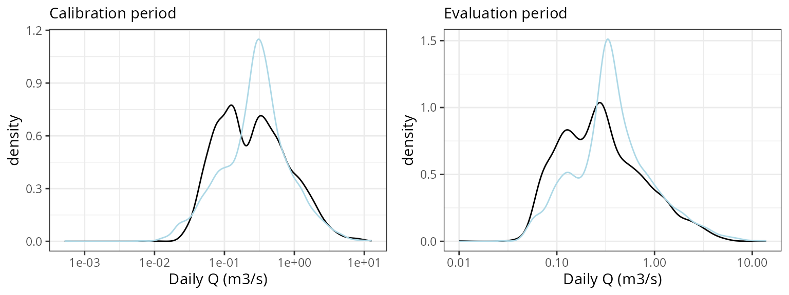
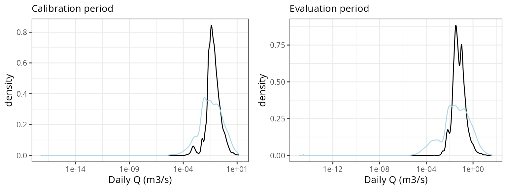

Evaluation of watershed-level runoff against river gauge data
Miquel De Cáceres / María González
2026-11-06
Source:vignettes/evaluation/WatershedLevelEvaluation.Rmd
WatershedLevelEvaluation.RmdIntroduction
Goal
The aim of this article is to provide an assessment of the
performance of spwb_land() for the prediction of watershed
outflow. To this aim, we simulate hydrological processes in a set of
benchmark watersheds and compare the model predictions of watershed
outflow, after parameter calibration, against measurements obtained
using river gauges at watershed outlets.
Calibration and simulation
For each watershed, the following procedure has been conducted:
- Initial warm-up simulation with default parameters for a specified number of years
- Calibration of watershed parameters for a specific period (warm-up + analysis) using a genetic algorithm and Kling–Gupta efficiency (KGE) as optimization function.
- Simulation with calibrated watershed parameters.
Evaluation
For each watershed, simulation results are compared to observed watershed outflow, differentiating between the period used for calibration and a posterior period used for independent evaluation. Note that the performance can decrease for the evaluation period because of vegetation growth not included in simulations, which may have reduced observed watershed outflow.
Goodness-of-fit statistics
The following goodness of fit statistics are calculated using package
hydroGOF:
- Nash-Sutcliffe Efficiency (NSE): This coefficient is sensitive to extreme values and might yield sub-optimal results when the dataset contains large outliers.
- Kling–Gupta efficiency (KGE): Provides a decomposition of the Nash-Sutcliffe efficiency, which facilitates the analysis of the importance of different components (bias, correlation and variability).
- Index of agreement (d): Initially proposed by Willmott (1981) to overcome the drawbacks of the R2, such as the differences in observed and predicted means and variances (Legates and McCabe, 1999). d is also dimensionless and bounded between 0 and 1 and can be interpreted similarly to R2.
- Volumetric efficiency index (VE): Originally proposed by Criss and Winston (2008) to circumvent some of the NSE flaws. VE values are also bounded [0, 1] and represent the fraction of water delivered at the proper time.
- Root mean squared error (RMSE): The usual estimation of average model error (i.e. the square root of mean squared errors).
Hydrological analysis
The density distribution and percentiles of daily discharge are compared between observations and predictions, for both the calibration and evaluation periods.
Watershed (TETIS) parameters
The following table contains the period of calibration and the set of TETIS parameters employed in simulations on all watersheds after calibration:
| medfateland | medfate | model | watershed | Calibration_start | Calibration_end | R_localflow | R_interflow | R_baseflow | n_interflow | n_baseflow | num_daily_substeps | rock_max_infiltration | deep_aquifer_loss |
|---|---|---|---|---|---|---|---|---|---|---|---|---|---|
| 3.0.1 | 5.2.0 | tetis | aiguadora | 2000-08-22 | 2010-08-22 | 0.9424477 | 2.828243 | 2.948424 | 0.1014878 | 1.2576093 | 24 | 10 | 3.608671 |
| 3.0.1 | 5.2.0 | tetis | siurana | 2000-01-01 | 2009-12-31 | 0.1938123 | 1.704728 | 1.166648 | 0.0350404 | 0.4877026 | 24 | 10 | 3.472153 |
Evaluation results
AIGUADORA watershed with TETIS and version 3.0.1
Goodness-of-fit
| Scale | Period | NSE | KGE | d | VE | RMSE |
|---|---|---|---|---|---|---|
| Daily | Calibration | 0.574 | 0.766 | 0.727 | 0.502 | 0.537 |
| Daily | Evaluation | -0.574 | 0.302 | 0.474 | 0.123 | 0.849 |
| Monthly | Calibration | 0.707 | 0.749 | 0.763 | 0.614 | 0.287 |
| Monthly | Evaluation | 0.059 | 0.429 | 0.525 | 0.323 | 0.455 |
Hydrological analysis (daily scale)
Density distribution

Percentiles
| Observed.Calibration | Simulated.Calibration | Observed.Evaluation | Simulated.Evaluation | |
|---|---|---|---|---|
| 1% | 0.0300 | 0.021 | 0.0600 | 0.056 |
| 5% | 0.0500 | 0.041 | 0.0700 | 0.084 |
| 10% | 0.0600 | 0.063 | 0.0900 | 0.111 |
| 15% | 0.0800 | 0.086 | 0.1000 | 0.137 |
| 25% | 0.1000 | 0.150 | 0.1300 | 0.221 |
| 50% | 0.2600 | 0.297 | 0.2700 | 0.349 |
| 75% | 0.5700 | 0.527 | 0.5400 | 0.618 |
| 85% | 0.9300 | 0.826 | 0.8500 | 0.946 |
| 90% | 1.2400 | 1.123 | 1.1700 | 1.280 |
| 95% | 1.8500 | 1.741 | 1.7660 | 2.010 |
| 99% | 3.7998 | 3.705 | 3.3616 | 4.338 |
Computation times
| medfateland_ver | medfate_ver | watershed | model | transpirationMode | soilDomains | rhizosphereOverlap | input | days | Elapsed_time_sec |
|---|---|---|---|---|---|---|---|---|---|
| 3.0.1 | 5.2.0 | aiguadora | spwb | Granier | buckets | total | simplified | 30 | 7.339 |
| 3.0.1 | 5.2.0 | aiguadora | spwb | Granier | single | total | simplified | 30 | 7.902 |
| 3.0.1 | 5.2.0 | aiguadora | spwb | Granier | dual | total | simplified | 30 | 8.229 |
| 3.0.1 | 5.2.0 | aiguadora | spwb | Granier | buckets | total | detailed | 30 | 8.632 |
| 3.0.1 | 5.2.0 | aiguadora | spwb | Granier | single | total | detailed | 30 | 9.176 |
| 3.0.1 | 5.2.0 | aiguadora | spwb | Granier | dual | total | detailed | 30 | 9.609 |
| 3.0.1 | 5.2.0 | aiguadora | growth | Granier | buckets | total | simplified | 30 | 7.610 |
| 3.0.1 | 5.2.0 | aiguadora | growth | Granier | single | total | simplified | 30 | 9.273 |
| 3.0.1 | 5.2.0 | aiguadora | growth | Granier | dual | total | simplified | 30 | 9.099 |
| 3.0.1 | 5.2.0 | aiguadora | growth | Granier | buckets | total | detailed | 30 | 11.124 |
| 3.0.1 | 5.2.0 | aiguadora | growth | Granier | single | total | detailed | 30 | 12.349 |
| 3.0.1 | 5.2.0 | aiguadora | growth | Granier | dual | total | detailed | 30 | 12.561 |
SIURANA watershed with TETIS and version 3.0.1
Goodness-of-fit
| Scale | Period | NSE | KGE | d | VE | RMSE |
|---|---|---|---|---|---|---|
| Daily | Calibration | 0.164 | 0.612 | 0.613 | 0.105 | 0.511 |
| Daily | Evaluation | -0.124 | 0.496 | 0.475 | -0.210 | 1.052 |
| Monthly | Calibration | 0.792 | 0.835 | 0.766 | 0.524 | 0.122 |
| Monthly | Evaluation | 0.237 | 0.436 | 0.565 | 0.160 | 0.278 |
Hydrological analysis (daily scale)
Density distribution

Percentiles
| Observed.Calibration | Simulated.Calibration | Observed.Evaluation | Simulated.Evaluation | |
|---|---|---|---|---|
| 1% | 0.0000000 | 0.000 | 0.0000000 | 0.000 |
| 5% | 0.0000000 | 0.000 | 0.0000000 | 0.000 |
| 10% | 0.0013747 | 0.000 | 0.0073056 | 0.000 |
| 15% | 0.0116000 | 0.000 | 0.0150000 | 0.000 |
| 25% | 0.0231000 | 0.000 | 0.0250000 | 0.000 |
| 50% | 0.0512000 | 0.000 | 0.0505000 | 0.004 |
| 75% | 0.1249990 | 0.024 | 0.1200006 | 0.074 |
| 85% | 0.2199000 | 0.106 | 0.1924064 | 0.238 |
| 90% | 0.3299600 | 0.240 | 0.2719856 | 0.482 |
| 95% | 0.6722750 | 0.703 | 0.5070718 | 1.167 |
| 99% | 2.0643371 | 2.958 | 1.9439456 | 4.858 |
Computation times
| medfateland_ver | medfate_ver | watershed | model | transpirationMode | soilDomains | rhizosphereOverlap | input | days | Elapsed_time_sec |
|---|---|---|---|---|---|---|---|---|---|
| 3.0.1 | 5.2.0 | siurana | spwb | Granier | buckets | total | simplified | 30 | 4.001 |
| 3.0.1 | 5.2.0 | siurana | spwb | Granier | single | total | simplified | 30 | 4.235 |
| 3.0.1 | 5.2.0 | siurana | spwb | Granier | dual | total | simplified | 30 | 4.298 |
| 3.0.1 | 5.2.0 | siurana | spwb | Granier | buckets | total | detailed | 30 | 4.402 |
| 3.0.1 | 5.2.0 | siurana | spwb | Granier | single | total | detailed | 30 | 4.989 |
| 3.0.1 | 5.2.0 | siurana | spwb | Granier | dual | total | detailed | 30 | 5.116 |
| 3.0.1 | 5.2.0 | siurana | growth | Granier | buckets | total | simplified | 30 | 4.152 |
| 3.0.1 | 5.2.0 | siurana | growth | Granier | single | total | simplified | 30 | 4.824 |
| 3.0.1 | 5.2.0 | siurana | growth | Granier | dual | total | simplified | 30 | 4.968 |
| 3.0.1 | 5.2.0 | siurana | growth | Granier | buckets | total | detailed | 30 | 5.944 |
| 3.0.1 | 5.2.0 | siurana | growth | Granier | single | total | detailed | 30 | 6.528 |
| 3.0.1 | 5.2.0 | siurana | growth | Granier | dual | total | detailed | 30 | 6.615 |